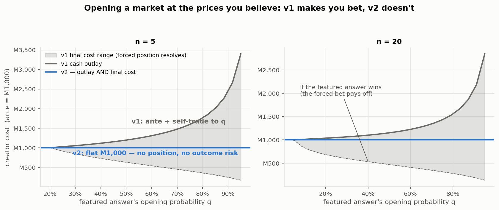
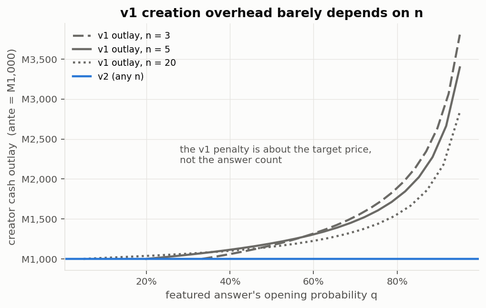
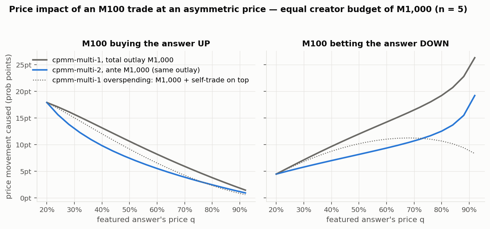
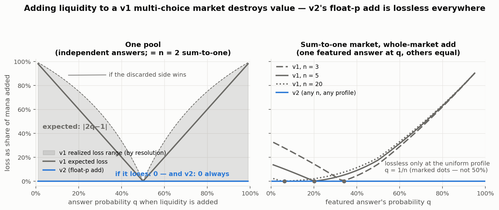
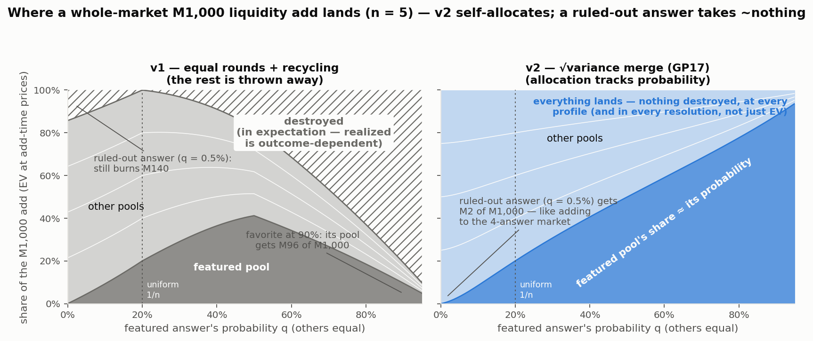
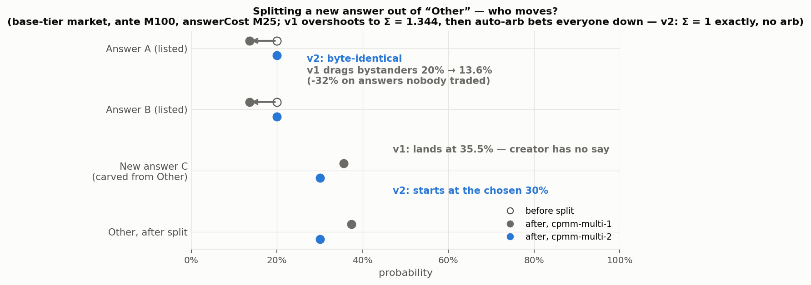
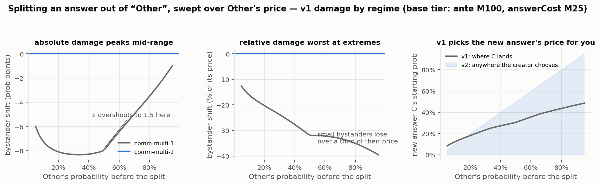

Figure gallery for the cpmm-multi-2
evidence bundle: what Manifold's cpmm-multi-1 mechanism costs creators, traders, and liquidity
providers — and what per-answer p (cpmm-multi-2) fixes. Every figure is generated by an
asserting script that computes through the bundle's
reference implementation;
scenario numbers use Manifold's default liquidity tiers. Convention throughout:
v1 = gray, v2 = blue.

v1 pins creation to uniform 1/n, so reaching a believed profile takes a forced self-trade: extra cash (M2,274 vs M1,000 at q = 0.9, n = 5) and an outcome-dependent final cost — the mechanism turns “open a market” into “take a leveraged position.” v2 opens at any profile for the ante, positionless.

The v1 penalty tracks the target price, not the answer count — n = 3/5/20 overlaid.

At equal creator budget (M1,000 total outlay), the v1 market is thinner than v2 in both directions at every asymmetric price — 22.8pt vs 15.5pt for a bet-down at q = 0.9. The dotted reference shows v1 with the self-trade paid on top: the extra capital masks, but doesn't fix, the mechanism's thinness.

One fixed-p pool destroys |2q−1| of an add in expectation — M800 of M1,000 at a 90% answer (realized: everything-or-nothing by resolution direction). The sum-to-one whole-market add partially recycles, but is lossless only at the exactly-uniform profile — for n > 2 the safe point is 1/n, not 50%. v2's float-p add is identically lossless everywhere.

And where the surviving value lands, pool by pool (reserve deltas valued in expectation at add-time prices; v1's realized loss is outcome-dependent): v1's landed mix is distorted and burned — at a 90% favorite its pool receives M96 of M1,000 (M807 destroyed), and even one ruled-out answer (traded down to q = 0.5%) still burns M140. v2's √variance merge destroys nothing in any resolution and allocates ≈ in proportion to probability: a ruled-out answer takes M2 of M1,000 — adding to a market with a dead answer is, in value terms, adding to the (n−1)-answer market.

A base-tier market with Other at 60%: v1's pool surgery + cleanup arb drag the listed answers from 20% to 13.6% (−32% on answers nobody traded), and the new answer lands at 35.5% — the creator never chooses its starting price. v2: bystanders byte-identical, the new answer starts exactly where asked, Σ = 1 with no arb pass.

Swept over Other's price: absolute bystander damage peaks mid-range (the Σ-overshoot maxes at 1.5), relative damage is worst at the extremes, and — because a traded market's pools are shallowest at the uniform point — the realistic worst case sits near qOther ≈ 1/n.